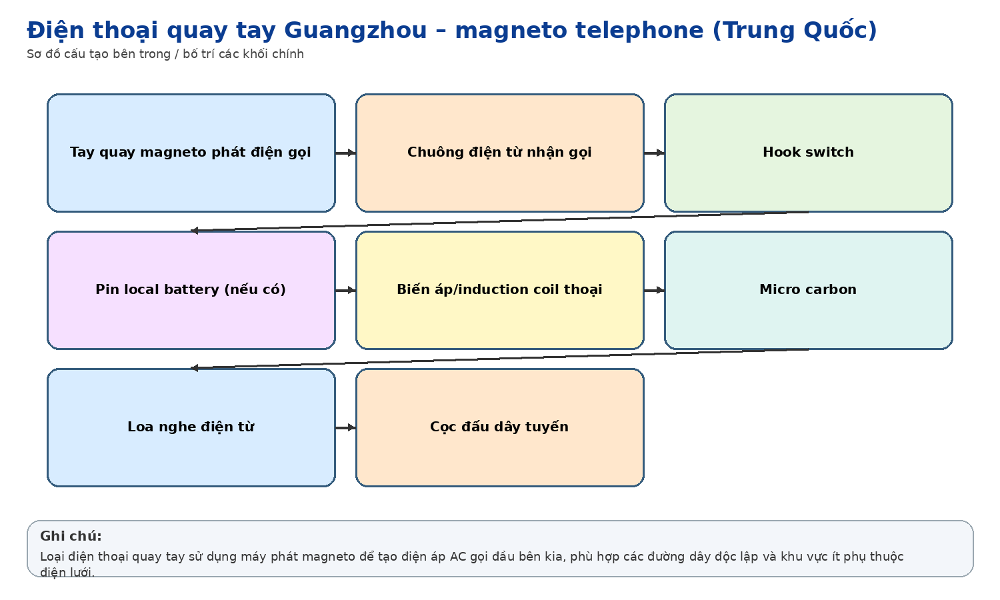
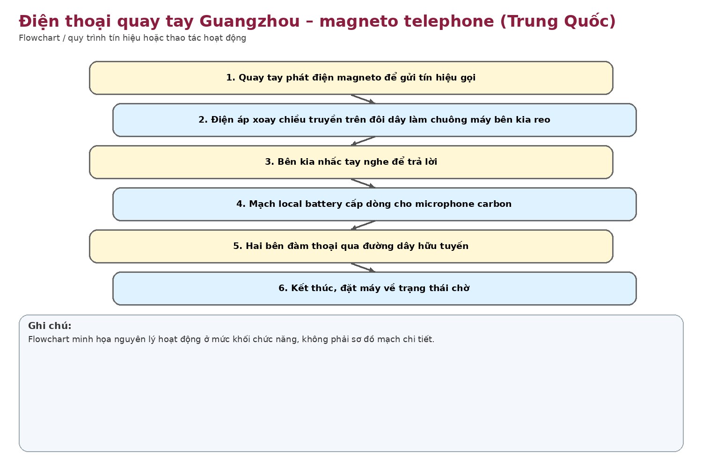
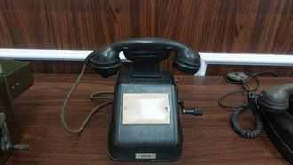

Nhận dạng & niên đại
Công dụng
Công dụng chung
Điện thoại local-battery có bộ phát magneto quay tay để tạo dòng xoay chiều gọi chuông ở đầu bên kia hoặc tổng đài.
Trong thông tin tín hiệu đường sắt
Phù hợp ga nhỏ, trạm gác, cung đường hoặc đường dây chuyên dùng nơi nguồn điện lưới không ổn định; chỉ cần đôi dây và pin thoại cục bộ.
Phạm vi làm việc
Rất hữu ích ở mạng dây dài/địa điểm xa nguồn điện; cấu tạo đơn giản và bền.
Cấu tạo bên trong

Handset; hook switch; máy phát magneto nối tay quay; chuông phân cực; mạng thoại/biến áp; ngăn pin cục bộ; cọc đấu dây. Bảng tên nhà máy nằm ở đáy trước máy.
Cách thức hoạt động

Pin cục bộ cấp dòng cho microphone khi đàm thoại. Khi quay tay, magneto tạo điện áp AC để làm chuông máy đối diện hoặc báo tổng đài. Người nhận nhấc handset để đóng mạch thoại.
Thông số kỹ thuật
Thông số chính
Chưa xác định model nên không chốt điện áp magneto, trở kháng chuông hoặc loại pin. Đặc trưng loại máy: local battery + magneto hand crank.
Nguồn điện / cấp nguồn
Nguồn thoại thường là pin khô cục bộ; nguồn gọi được tạo cơ học bằng magneto nên không phụ thuộc điện lưới.
Giá trị lịch sử – trưng bày
Đại diện rõ cho thời kỳ thông tin hữu tuyến cơ điện, khi người sử dụng tự tạo tín hiệu gọi bằng tay quay – một lớp công nghệ có trước tổng đài tự động và điện thoại chọn gọi điện tử.
Tình trạng quan sát
Máy còn handset, tay quay và bảng tên 广州有线电厂. Mặt trước có tấm trắng có thể từng dùng ghi số/tuyến; vỏ đã lão hóa.
Ảnh hiện vật


Xác minh thêm & nguồn tham khảo
Căn cứ mốc sử dụng tại Việt Nam/ĐSVN:
Thấp
về mốc Việt Nam; cần hồ sơ tài sản.